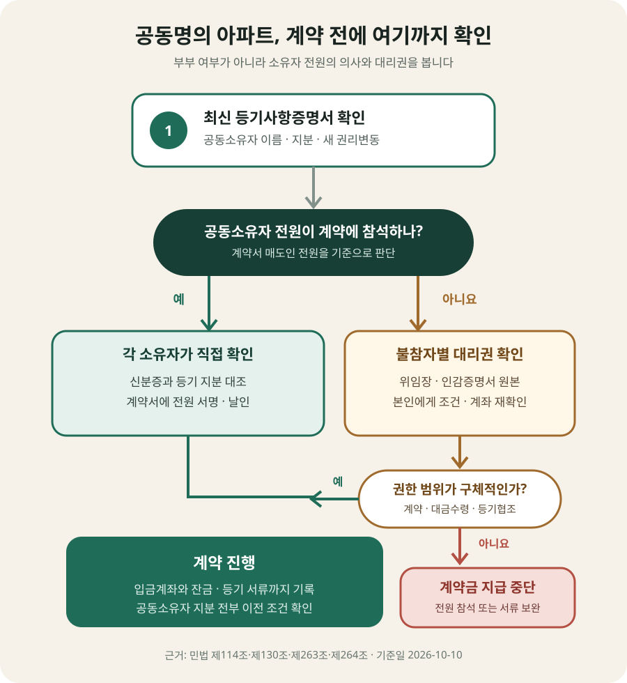

공동명의자 한 명이 집 전체를 팔 수 있을까?
등기사항증명서 갑구에 남편 2분의 1, 아내 2분의 1처럼 적혀 있다면 두 사람은 각각 자기 지분을 가진 공동소유자입니다. 민법 제263조에 따라 각 공유자는 자기 지분을 처분할 수 있습니다. 따라서 한 사람은 원칙적으로 자기 지분만 따로 팔 수 있습니다.
하지만 매수인이 원하는 것은 보통 지분 절반이 아니라 아파트 전체입니다. 집 전체를 한 사람에게 넘기려면 모든 공동소유자의 지분이 함께 이전되어야 합니다. 민법 제264조는 공유자가 다른 공유자의 동의 없이 공유물을 처분하거나 변경하지 못한다고 정합니다. 지분이 90%인 사람이 나와도 나머지 10% 소유자의 지분까지 임의로 팔 수는 없습니다.
배우자라는 이유만으로 대신 서명할 수 있을까?
부부는 생활비 지급이나 일상적인 살림처럼 ‘일상의 가사’에 관해 서로 대리권이 있습니다. 그러나 수억원짜리 부동산을 파는 행위까지 자동으로 포함되는 것은 아닙니다. 대법원도 배우자의 부동산 처분은 일상가사에 속하지 않는다고 판단했습니다. 남편이나 아내가 계약서·도장·신분증을 가지고 왔다는 사실만으로 상대 배우자의 매도 의사를 확정해서는 안 됩니다.
민법 제114조에 따르면 대리인이 권한 안에서 본인을 위한 것임을 표시해 계약하면 그 효력이 본인에게 생깁니다. 반대로 권한이 없는 사람이 타인의 대리인으로 계약했다면, 민법 제130조에 따라 본인이 추인하지 않는 한 본인에게 효력이 없습니다. 즉 ‘배우자가 나중에 알면 당연히 인정하겠지’라고 생각하고 계약금을 먼저 보내는 것은 위험합니다.
대법원 93다16369 판결은 부동산 매수인이 매도인에게 처분권한이 있는지 조사해야 한다고도 설명합니다. 중개사가 부부 사이라고 소개했거나 한 사람이 가족관계증명서를 보여 줬다는 사정만으로 확인 의무를 대신할 수 없습니다.

계약 전에 어떤 서류를 확인해야 할까?
법제처의 찾기쉬운 생활법령정보는 위임대리인과 매매계약을 할 때 위임장과 인감증명서를 함께 확인하라고 안내합니다. 서류 이름만 갖춰졌는지가 아니라 서로 맞물리는지가 중요합니다.
| 확인 자료 | 무엇을 대조하나 | 놓치기 쉬운 점 |
|---|---|---|
| 최신 등기사항증명서 | 공동소유자 이름, 각 지분, 근저당·가압류 등 권리 | 계약 당일 다시 열람하고 모든 소유자를 계약서 매도인란에 적음 |
| 참석자의 신분증 | 등기명의인 또는 대리인의 이름·사진 | 배우자라는 말만 듣고 소유자·대리인 구분을 생략하지 않음 |
| 불참자의 위임장 | 부동산 표시, 상대방, 매매가격, 위임 범위, 작성일, 위임인·수임인 | ‘부동산 업무 일체’처럼 모호한 문구보다 계약·대금수령·등기 권한을 각각 확인 |
| 불참자의 인감증명서 | 위임장 날인과 인감, 이름·주소, 발급 용도 | 사본만 받거나 다른 용도로 발급된 오래된 서류를 그대로 쓰지 않음 |
| 본인 의사 확인 | 매도 부동산, 가격, 대리인, 입금계좌를 본인에게 직접 재확인 | 대리인이 알려 준 연락처만 쓰지 말고 기존 자료·중개 기록과 교차 확인 |
위임장에는 주소만 적기보다 등기기록과 맞는 동·호수와 부동산 표시를 적고, ‘매매계약 체결’과 ‘계약금·중도금·잔금 수령’, ‘소유권이전등기 서류 교부’ 중 어떤 권한을 맡겼는지 나누어 적는 편이 안전합니다. 가격을 얼마든지 바꿀 수 있는지, 정해진 금액 아래로는 계약할 수 없는지도 분명히 하면 대리인이 임의로 조건을 바꾸는 일을 줄일 수 있습니다.
계약 체결용 확인과 잔금일 등기신청 서류는 같지 않을 수 있습니다. 법제처 소유권이전등기 안내에 따르면 방문 등기에서 등기의무자의 인감증명은 발행일부터 3개월 이내인 것을 제출하는 경우가 있습니다. 계약할 때 본 위임장 한 장으로 잔금 수령과 등기까지 모두 끝난다고 단정하지 말고, 잔금 전에 담당 법무사에게 공동명의자별 원본 서류를 확인받으세요.
상황별로 계약 진행 여부를 나눠 보면
| 계약 자리 | 판단 | 매수인이 할 일 |
|---|---|---|
| 공동소유자 전원이 참석 | 각자 자기 지분의 매도 의사 확인 가능 | 신분증·등기 지분을 대조하고 전원이 계약서에 서명·날인 |
| 한 명만 참석, 불참자의 구체적 위임서류 있음 | 위임 범위 안에서 대리계약 가능 | 원본과 날인을 확인하고 불참자에게 조건·계좌를 직접 재확인 |
| 한 명만 참석, “부부니까 괜찮다”며 서류 없음 | 불참자 지분에 관한 권한이 확인되지 않음 | 계약금 지급을 멈추고 전원 참석 또는 적법한 위임서류를 요청 |
| 참석자가 자기 지분만 매도 | 자기 지분 처분은 가능할 수 있음 | 아파트 전체가 아닌 지분만 사게 되는 거래인지 명확히 확인 |
실제 계약서는 ‘아파트 전체를 하나로 사는 계약’인지, 공동소유자별 지분을 나누어 사는 계약인지에 따라 해석과 해제 범위가 달라질 수 있습니다. 대법원도 공유자 전원이 같은 매수인에게 지분을 매도한 경우 당사자의 의사에 따라 각 지분별 계약인지 불가분인 하나의 계약인지 달라질 수 있다고 봤습니다. 일반적인 실거주용 아파트 전체를 사는 매수인이라면 계약서에 공동소유자 전원의 지분 전부를 이전하는 것이 계약 목적임을 분명히 적는 편이 좋습니다.
계약금은 누구 계좌로 보내야 할까?
공동명의라면 계약금도 아무 계좌로 보내지 마세요. 가장 단순한 방식은 각 공동소유자의 지분과 합의에 맞춰 각자 명의 계좌로 나누어 보내는 것입니다. 한 사람 계좌로 전액을 보내기로 했다면 다른 공동소유자가 그 수령을 동의했고, 참석한 배우자에게 대금 전액을 받을 권한이 있는지 위임장과 계약서에 남겨야 합니다.
예를 들어 매매가 8억원, 계약금 8천만원인 50:50 공동명의 아파트를 가정해 보겠습니다. 계약금을 4천만원씩 각 소유자 계좌로 보내면 송금 경로가 지분과 맞습니다. 부부가 한 계좌로 8천만원 전액을 받기로 합의했다면 계약서에 계좌번호와 예금주, 해당 계좌로 지급하면 공동매도인 모두에 대한 계약금 지급으로 본다는 문구를 적고 불참자에게도 직접 확인합니다.
계약서에 대신 서명할 권한이 있다고 해서 계약금·잔금까지 임의의 계좌로 받을 권한이 당연히 포함된다고 단정할 수 없습니다. 위임장과 계약서에 수령 권한과 계좌를 구체적으로 적고, 이체 메모와 영수증을 보관하세요.
잔금일에도 공동명의자별로 다시 확인합니다
계약일에 대리권을 확인했더라도 잔금일까지 아무 확인 없이 기다려서는 안 됩니다. 그 사이 가압류가 생기거나 위임이 철회되고, 등기신청에 필요한 원본이 준비되지 않을 수 있습니다. 잔금 1~2주 전에는 법무사에게 공동명의자별 매도용 인감증명서, 등기필정보, 주소변경 자료, 위임장과 신분확인 방법을 점검받으세요.
- □ 잔금 직전 등기사항증명서에서 소유자·지분·새 권리변동을 다시 확인했다.
- □ 각 공동소유자의 매도 의사와 잔금 수령 계좌가 그대로인지 확인했다.
- □ 근저당 말소와 소유권이전등기에 필요한 원본을 법무사가 확인했다.
- □ 한 명이 잔금과 서류 교부를 대신한다면 그 권한이 위임장에 포함돼 있다.
- □ 잔금 지급과 등기 접수, 열쇠·점유 인도를 같은 흐름에서 처리한다.
이미 한 명하고만 계약했다면 어떻게 해야 할까?
위임서류 없이 계약서를 쓴 사실을 뒤늦게 알았다면 중도금이나 추가 계약금을 바로 보내지 말고, 불참한 공동소유자의 확인부터 받으세요. 그 사람이 계약 내용을 인정한다면 계약서 원문과 동일한 부동산·가격·대금 일정에 동의한다는 추인 문서를 받고, 필요한 위임·등기 서류를 보완합니다.
민법 제131조는 무권대리 계약의 상대방이 본인에게 상당한 기간을 정해 추인 여부의 확답을 요구할 수 있도록 합니다. 다만 실제로 계약을 철회하거나 해제할 수 있는지, 계약금 반환과 손해배상은 어떻게 되는지는 상대방이 대리권 없음을 알았는지, 본인이 추인했는지, 계약서가 지분별로 나뉘는지 등에 따라 달라질 수 있습니다. 문자 한 통으로 결론 내리지 말고 계약서, 등기, 송금내역, 중개대상물 확인·설명서와 당시 대화를 가지고 변호사에게 검토받는 편이 안전합니다.
계약 직전 확인할 것
- □ 최신 등기사항증명서의 공동소유자 전원과 지분을 계약서에 옮겼다.
- □ 참석하지 않는 사람마다 위임장과 인감증명서 원본을 확인했다.
- □ 위임장에 부동산, 가격, 계약 체결, 대금 수령, 등기 협조 범위가 구체적이다.
- □ 불참자 본인에게 매도 의사와 계약 조건, 입금계좌를 직접 확인했다.
- □ 계약금 수령 계좌가 소유자 또는 명시적으로 위임된 계좌다.
- □ 공동소유자 지분 전부가 이전되지 않으면 잔금을 지급하지 않는다는 취지가 드러난다.
- □ 잔금일 공동명의자별 등기 원본과 근저당 말소 준비를 법무사와 확인했다.
공식 근거
- 국가법령정보센터 — 민법 제263조(공유지분의 처분)
- 국가법령정보센터 — 민법 제264조(공유물의 처분·변경)
- 국가법령정보센터 — 민법 제114조(대리행위의 효력)
- 국가법령정보센터 — 민법 제130조(무권대리)
- 대법원 1994. 2. 8. 선고 93다16369 판결 — 배우자의 부동산 처분과 권한 확인
- 찾기쉬운 생활법령정보 — 매매당사자와 대리권 확인
정보 기준일: 2026-10-10. 이 글은 개인 간 국내 아파트 매매에서 부부 등 공동소유자 중 한 명이 대리계약에 참석하는 일반적인 상황을 설명한 정보이며 개별 법률·등기 자문이 아닙니다. 상속공유, 미성년자·피성년후견인, 법인, 재외국민·외국인, 지분매매, 토지거래허가, 가처분·가압류, 전자등기와 대리권 분쟁이 있으면 필요한 서류와 계약 효력이 달라질 수 있습니다. 계약금 지급 전에 계약서 원문과 등기, 위임서류를 가지고 변호사·법무사에게 확인하세요.